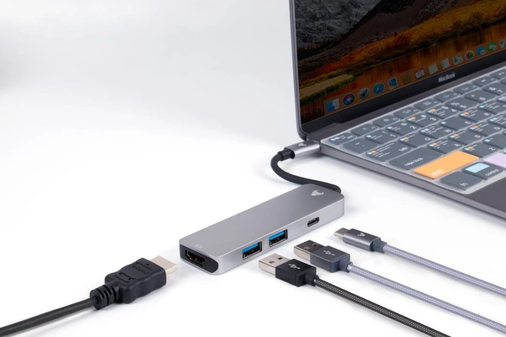
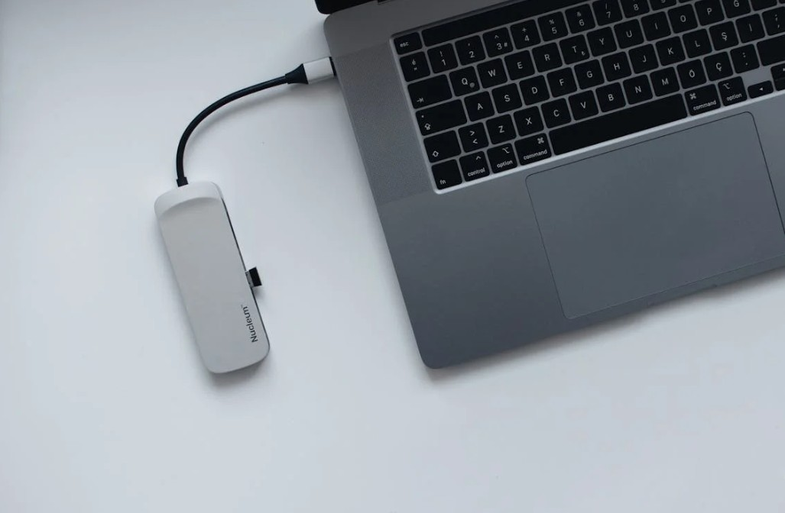
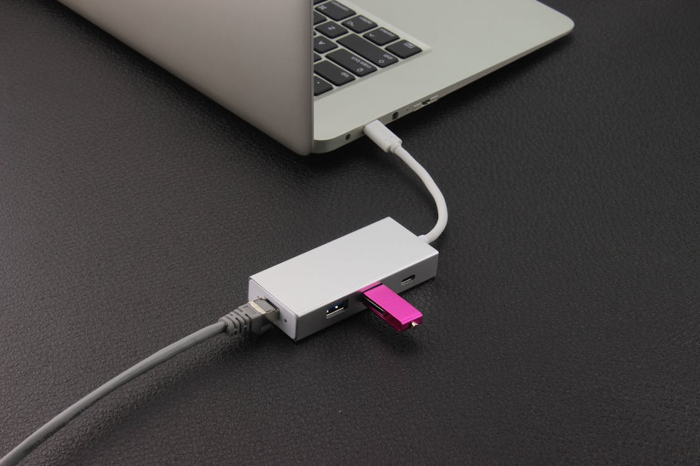
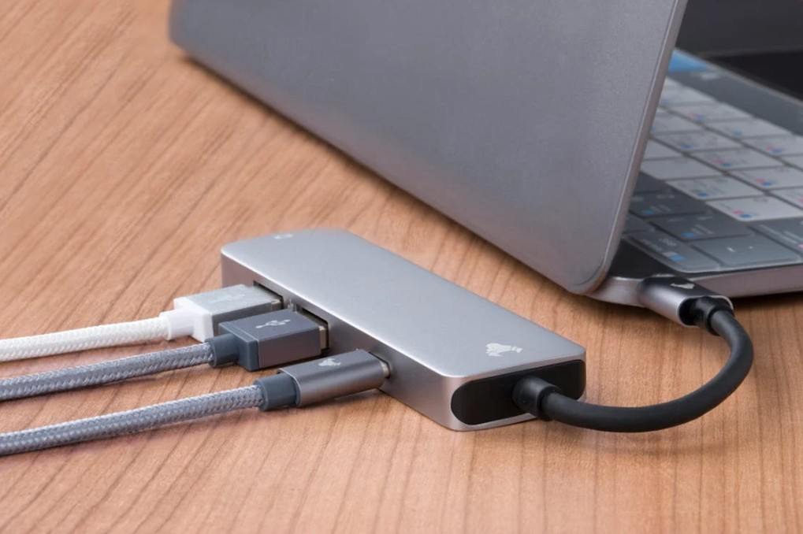

แนะนำ USB Hub โอนข้อมูลรวดเร็วอเนกประสงค์
01 ก.พ. 2568 ในยุคที่เทคโนโลยีเข้ามามีบทบาทในชีวิตประจำวันมากขึ้นเรื่อยๆ การมีอุปกรณ์เสริมที่ช่วยอำนวยความสะดวกในการใช้งานก็เป็นสิ่งที่ขาดไม่ได้ USB Hub นับเป็นอีกหนึ่งอุปกรณ์ที่ตอบโจทย์ความต้องการของผู้ใช้งานได้เป็นอย่างดี ช่วยให้คุณจัดการอุปกรณ์ต่างๆ ได้อย่างมีประสิทธิภาพมากยิ่งขึ้น
USB Hub คืออะไร ใช้ทําอะไร
USB Hub คืออุปกรณ์ที่ช่วยให้คุณสามารถเชื่อมต่ออุปกรณ์ USB หลายๆ ตัวเข้ากับคอมพิวเตอร์หรือโน้ตบุ๊กผ่านพอร์ต USB เพียงพอร์ตเดียว โดยอุปกรณ์นี้สามารถแบ่งสัญญาณ USB ออกเป็นหลายพอร์ต ทำให้คุณสามารถใช้งานอุปกรณ์ต่างๆ เช่น เมาส์ คีย์บอร์ด ฮาร์ดดิสก์ หรือแฟลชไดรฟ์ โดยไม่ต้องเปลี่ยนพอร์ตไปมา นอกจากนี้ USB Hub ยังมักมีฟีเจอร์ที่ช่วยให้คุณสามารถโอนข้อมูลได้อย่างรวดเร็ว และบางรุ่นก็สามารถชาร์จอุปกรณ์ต่างๆ ได้อีกด้วย ดังนั้นจึงเหมาะสำหรับผู้ที่มีอุปกรณ์มากมายและต้องการความสะดวกในการใช้งานทั้งในบ้านและที่ทำงาน
ข้อดี ข้อเสีย USB Hub
USB Hub ข้อดี
- เพิ่มพอร์ต USB: USB Hub ช่วยเพิ่มจำนวนพอร์ต USB ที่สามารถใช้งานได้ ทำให้สามารถเชื่อมต่ออุปกรณ์หลายๆ ตัวได้พร้อมกัน เช่น เมาส์ คีย์บอร์ด และแฟลชไดรฟ์
- โอนข้อมูลรวดเร็ว: รุ่นที่รองรับ USB 3.0 หรือใหม่กว่า ให้ความเร็วในการโอนข้อมูลที่สูงมาก ซึ่งช่วยประหยัดเวลาเมื่อย้ายไฟล์ขนาดใหญ่
- สะดวกและอเนกประสงค์: USB Hub เหมาะสำหรับผู้ที่มีอุปกรณ์มากมาย เช่น โทรศัพท์, แท็บเล็ต, หรืออุปกรณ์เสริมอื่นๆ ทำให้การจัดการใช้งานง่ายขึ้น
- ฟังก์ชันการชาร์จ: บางรุ่นมีฟีเจอร์ให้สามารถชาร์จอุปกรณ์ได้ในขณะที่เชื่อมต่อกับคอมพิวเตอร์ ทำให้สะดวกในการใช้งาน
- พกพาง่าย: มักมีขนาดเล็กและเบา สามารถพกพาไปได้ทุกที่ทั้งในบ้านและที่ทำงาน
USB Hub ข้อเสีย
- แหล่งจ่ายไฟจำกัด: เมื่อเชื่อมต่ออุปกรณ์หลายๆ ตัว อาจทำให้แหล่งจ่ายไฟไม่เพียงพอสำหรับทุกอุปกรณ์ ทำให้ใช้ไม่เต็มประสิทธิภาพ
- ความเข้ากันได้: บางรุ่นอาจไม่รองรับอุปกรณ์บางประเภท ซึ่งอาจจำกัดการใช้งานหรือทำให้ไม่สามารถทำงานได้ดังที่คาดหวัง
- คุณภาพการรับส่งข้อมูลต่ำ: หากใช้ USB Hub ที่มีคุณภาพต่ำ อาจส่งผลให้การโอนข้อมูลช้าลงหรือเกิดความผิดพลาดได้
- อาจทำให้ร้อน: การใช้งานต่อเนื่องเป็นเวลานานอาจทำให้ USB Hub ร้อนขึ้น ซึ่งอาจส่งผลกระทบต่อการใช้งานได้
- การจัดการสายเคเบิล: การมีหลายอุปกรณ์เชื่อมต่อพร้อมกันอาจทำให้มีสายเคเบิลเกะกะ และส่งผลให้พื้นที่การทำงานดูยุ่งเหยิง
วิธีแก้ USB Hub ใช้ไม่ได้
เมื่อ USB Hub ของคุณไม่ทำงานตามที่คาดหวัง สามารถลองทำตามวิธีดังต่อไปนี้เพื่อแก้ไขปัญหา
1. ตรวจสอบการเชื่อมต่อ
ตรวจสอบสาย USB: ตรวจสอบว่ามีการเชื่อมต่อสาย USB ของ Hub เข้ากับคอมพิวเตอร์อย่างถูกต้อง และไม่มีความเสียหายที่เกิดจากการใช้งาน
ลองเปลี่ยนพอร์ต USB: หากเชื่อมต่อกับพอร์ต USB ใดพอร์ตหนึ่งแล้วไม่ทำงาน ลองเปลี่ยนไปใช้งานกับพอร์ต USB อื่นบนคอมพิวเตอร์
2. รีสตาร์ทอุปกรณ์
บางครั้งการรีสตาร์ทคอมพิวเตอร์สามารถแก้ไขข้อผิดพลาดชั่วคราวได้ ลองปิดและเปิดใหม่อีกครั้งเพื่อตรวจสอบว่า USB Hub กลับมาใช้งานได้หรือไม่
3. อัพเดตไดรเวอร์
ตรวจสอบให้แน่ใจว่าไดรเวอร์ USB ของคอมพิวเตอร์ของคุณเป็นเวอร์ชันล่าสุด โดยสามารถตรวจสอบและติดตั้งได้จากเว็บไซต์ของผู้ผลิต
4. ทดสอบกับอุปกรณ์อื่น
ลองเชื่อมต่อ USB Hub กับอุปกรณ์อื่น เช่น คอมพิวเตอร์หรือโน๊ตบุ๊กเครื่องอื่น เพื่อดูว่า USB Hub ทำงานได้หรือไม่ หากยังไม่ทำงาน อาจหมายความว่า USB Hub มีปัญหา
5. ตรวจสอบแหล่งจ่ายไฟ
ถ้า USB Hub มีการจ่ายไฟแยก (powered hub) ตรวจสอบว่ามีการเชื่อมต่อกับแหล่งจ่ายไฟอย่างถูกต้อง อาจมีการขัดข้องที่ทำให้ Hub ไม่สามารถทำงานได้
6. ตรวจสอบการตั้งค่าช่อง USB
สำหรับผู้ใช้ Windows: เปิด Device Manager และตรวจสอบดูว่ามีอุปกรณ์ใดๆ ที่ขัดข้องหรือไม่ หากพบ ให้คลิกขวาและเลือก "Uninstall device" จากนั้นให้รีสตาร์ทเครื่องเพื่อติดตั้งใหม่
7. ตรวจสอบเพื่อหาความผิดปกติ
หาก Hub มีไฟ LED แสดงสถานะเชื่อมต่อ ตรวจสอบว่าไฟแสดงสถานะทำงานหรือไม่ หากไม่สามารถแสดงสถานะ อาจหมายถึง Hub มีปัญหาหรือชำรุด
คำถามที่พบบ่อยเกี่ยวกับ USB Hub ยี่ห้อไหนดี
ทำไมควรใช้ USB Hub?
USB Hub ช่วยเพิ่มความสะดวกในการเชื่อมต่ออุปกรณ์ต่างๆ เช่น แฟลชไดรฟ์ เมาส์ คีย์บอร์ด และอื่นๆ โดยเฉพาะในกรณีที่คอมพิวเตอร์ของคุณมีพอร์ต USB จำกัด
USB Hub มีหลายประเภทหรือไม่?
USB Hu มีหลายประเภท เช่น USB Hub แบบพกพา, Hub ที่มีสปอร์ตเพิ่มเติม เช่น HDMI และได้แก่พอร์ต Ethernet, ตัวเลือกแบบเร้าเตอร์ หรือ แบบที่ใช้พลังงานไฟฟ้า
มีความแตกต่างระหว่าง USB 2.0 และ USB 3.0 หรือไม่?
USB 3.0 ให้ความเร็วในการถ่ายโอนข้อมูลที่สูงกว่ามาก และมาพร้อมกับฟีเจอร์เพิ่มเติม เช่น การส่งข้อมูลสองทางในเวลาเดียวกัน
USB Hub ใช้กับอุปกรณ์ใดได้บ้าง?
USB Hub สามารถใช้กับอุปกรณ์ที่มีพอร์ต USB ทั้งแบบคอมพิวเตอร์, โน้ตบุ๊ก, แท็บเล็ต, และสมาร์ทโฟน รวมถึงอุปกรณ์เสริมเช่น เครื่องพิมพ์และสแกนเนอร์
การใช้งาน USB Hub ต้องติดตั้งไดรเวอร์ไหม?
ส่วนใหญ่ USB Hub จะรองรับฟังก์ชัน Plug and Play ซึ่งไม่จำเป็นต้องติดตั้งไดรเวอร์ แต่ก็ควรตรวจสอบก่อนใช้งานเพื่อความแน่ใจ
USB Hub สามารถใช้งานต่อเนื่องได้หรือไม่?
USB Hub สามารถใช้งานต่อเนื่องได้ เพียงแต่ควรตรวจสอบคุณภาพและความสามารถในการจัดการพลังงานของแต่ละรุ่นเพื่อป้องกันปัญหาไฟฟ้าลัดวงจรหรือการร้อนเกินไป